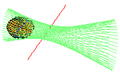

University at Albany
20 March 2002
Gabor Megyesi
Frank Sottile
Thorsten Theobald

| Common transversals and tangents to two lines and a quadric in P3 | ||
|  |
CRANTS Seminar University at Albany 20 March 2002 Gabor Megyesi Frank Sottile Thorsten Theobald |
|
| Thank you for your attention |  |